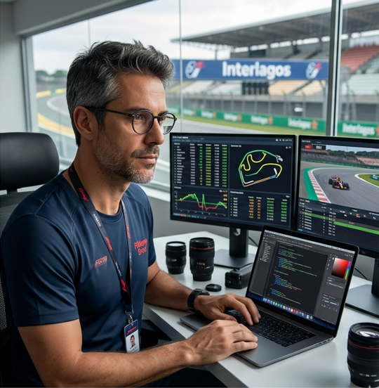

O que é o Pit Lane Brasil? Quem somos nós?
O Pit Lane Brasil é um espaço criado para quem vive a Fórmula 1 de verdade. Mais do que um simples site, ele reúne informações, histórias e curiosidades sobre as equipes e tudo o que acontece dentro e fora das pistas. Aqui, cada detalhe importa, desde a estratégia de corrida até os bastidores que o público nem sempre vê.
A proposta é aproximar os fãs do universo da F1 de forma simples e envolvente, trazendo conteúdo acessível tanto para quem está começando a acompanhar quanto para quem já acompanha o esporte há anos. O site nasce da paixão pelo automobilismo e do desejo de compartilhar essa experiência com outras pessoas que sentem a mesma adrenalina a cada corrida.
Agora que você já conhece o site, confira abaixo quem são nossos fundadores e também de uma conferida em nosso primeiro conteúdo Equipes, que conta um pouquinho sobre as equipes presentes no grid de 2026!
Equipe do Projeto
Conheça os integrantes responsáveis por este projeto.
Pedro Felipe
Apaixonado por Fórmula 1 desde cedo, Pedro Felipe é o criador do Pit Lane Brasil. Seu objetivo é compartilhar conhecimento, curiosidades e a emoção das corridas com outros fãs, trazendo conteúdo acessível e envolvente sobre as equipes e o mundo da F1. Unindo tecnologia e paixão pelo automobilismo, ele desenvolveu o site como um espaço para quem vive intensamente o esporte.
Ana Silva
Ana Silva vive a Fórmula 1 diretamente das pistas. Como repórter, acompanha de perto os bastidores das equipes, entrevistas com pilotos e toda a movimentação dos finais de semana de corrida. Seu trabalho é levar ao público informações atualizadas e exclusivas, transmitindo a emoção do paddock e aproximando os fãs do universo da F1 como se estivessem lá.

Danilo Andrade
Danilo Andrade traz uma visão estratégica para o Pit Lane Brasil. Especialista em análise de dados e desempenho, ele interpreta números, estratégias e estatísticas das corridas para explicar o que realmente acontece dentro da pista. Seu olhar analítico transforma dados complexos em informações claras, ajudando os fãs a entenderem cada detalhe que influencia o resultado de um Grande Prêmio.